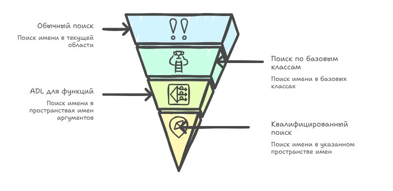
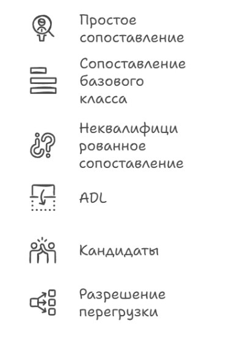
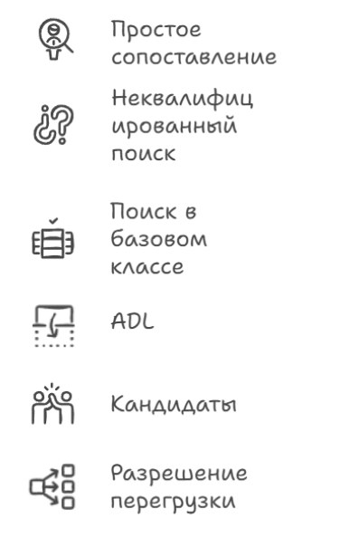

Questa è la continuazione del tema iniziato in I nomi contano per il compilatore e proseguito in Di notte tutti i gatti sono grigi, e tutti gli using si somigliano (in russo); se vuoi il quadro completo di come il compilatore trasforma il testo in un programma, allora senza capire il name lookup non potrai andare avanti.
I nomi nel testo sorgente sono solo comode etichette per gli esseri umani: variabili, funzioni, tipi. Ma per il compilatore un nome è il punto di ingresso in un algoritmo piuttosto complesso che deve determinare in modo univoco cosa esattamente intendevi. Ed è qui che diventa interessante: lo stesso nome scritto in contesti diversi può significare cose completamente diverse, e talvolta niente del tutto, a seconda di dove e come viene usato.
Il C++ è particolarmente insidioso qui. Il linguaggio è cresciuto nel corso di decenni, e le regole del name lookup si sono evolute insieme a esso: sono stati aggiunti namespace, template, ADL, two-phase lookup. Tutto questo non solo ha reso il modello più complesso, ma lo ha reso in alcuni punti poco intuitivo persino per gli sviluppatori esperti — e a ciò si aggiunge il fatto che i diversi compilatori hanno storicamente implementato queste regole in modo differente (ciascuno a modo suo), e parte di quelle differenze affiora ancora oggi nel codice.
Non dovresti trattare il compilatore come una scatola nera, anche se il name lookup a volte sembra davvero magia; ma se lo scomponi in passi separati, vedi che dietro questa «magia» c'è un sistema di regole piuttosto rigoroso (anche se storicamente carico). Proverò a raccontartelo.
Per capire come funziona il name lookup, prima occorre comprendere il sistema di descrizione dei nomi che scriviamo nel codice. Al livello più basilare abbiamo un identificatore, che è essenzialmente solo una sequenza di lettere, cifre e underscore, per esempio speed, foo o my_var.
Quando usiamo un template, anche il suo nome è un identificatore, ma quando aggiungiamo gli argomenti del template, per esempio my<T, 1>, otteniamo non un semplice nome di template ma un nome di template qualificato, ovvero template-id.
Per unificare queste nozioni si introduce il termine unqualified-id. È un concetto generale che include non solo gli identificatori ordinari, ma anche forme più complesse di nomi, come operatori, distruttori o literal definiti dall'utente.
E quando aggiungiamo l'operatore di risoluzione di scope ::, otteniamo un qualified-id, per esempio std::vector, Foo::~Foo, e così via. È importante capire che nell'espressione Foo::bar il nome bar è qualificato, mentre Foo stesso è un qualificatore ma è a sua volta un nome non qualificato.
// Nome non qualificato
// solo un identificatore
vector<int> v;
// 'vector' — nome non qualificato
sort(v.begin(), v.end());
// 'sort' — nome non qualificato
// Nome qualificato (qualified-id)
// con l'operatore ::
std::vector<int> v;
// 'vector' — qualificato,
// 'std' — qualificatore
std::sort(v.begin(), v.end());
struct Foo {
~Foo() {}
static void bar() {}
};
Foo::bar();
// 'bar' — nome qualificato
// 'Foo' — qualificatore
Foo::~Foo();
//'~Foo' — nome qualificato
// del distruttore
// template-id — un nome di template con argomenti espliciti
std::vector<int> v1; // 'vector<int>' — template-id
std::pair<int, float> p; // 'pair<int, float>' — template-idCiò che resta è il concetto chiave per il name lookup — il terminal name. È l'ultimo nome lessicale che l'algoritmo di lookup cerca in definitiva di trovare. Per esempio, nell'espressione obj->f il terminal name è f, ed è esattamente ciò che il compilatore cerca come risultato di tutte le fasi del lookup.
// Il terminal name - l'ultimo nome che il compilatore cerca
obj->f(); // terminal name: 'f'
std::vector<int>::size_type x; // terminal name: 'size_type'
Foo::bar(); // terminal name: 'bar'
ns::Foo::bar();// terminal name: 'bar', qualificatori: 'ns', 'Foo'
// Dove conta: il lookup in contesti dipendenti
template<typename T>
void wrapper(T& obj) {
obj.size();
// 'size' - terminal name non qualificato
// il compilatore lo cerca nel tipo T al momento dell'istanziazione
T::value_type x;
// 'value_type' - terminal name qualificato
// senza 'typename' il compilatore potrebbe non capire che è un tipo
typename T::value_type y; // questo è più corretto
}Comprendere i termini «identificatore», «template-id», «qualified-id» e soprattutto «terminal name» diventa la chiave per capire sia lo standard sia il comportamento del compilatore in generale. La regola generale del name lookup in C++ è semplice ma confusa, perché si è sviluppata a salti da standard a standard, mentre vendor, grandi aziende e persino sviluppatori famosi hanno dato il loro contributo.
Fino al 2017 MSVC non supportava il two-phase name lookup (più avanti se ne parla), e quando analizzava un template il compilatore rimandava il lookup di tutti i nomi fino all'istanziazione, mentre lo standard richiedeva di suddividere il lookup in due fasi già alla definizione del template. GCC e Clang seguivano lo standard più rigorosamente; MSVC ha ignorato questo requisito per oltre 20 anni.
Andrew Koenig propose una modifica delle regole del name lookup legata ai namespace, che entrò nello standard sotto il nome «Koenig lookup» ed è ufficialmente fissata nello standard come [basic.lookup.koenig], anche se nell'uso quotidiano viene più spesso chiamata ADL — argument-dependent lookup.
C'è una storia interessante con l'ADL, perché Koenig non inventò l'ADL ma si limitò a formulare e a far passare una soluzione a un problema già esistente. All'inizio degli anni '90 il comitato stava aggiungendo i namespace alla bozza dello standard, ma si scoprì che entravano in conflitto con l'overloading degli operatori. Era necessario capire come fare in modo che gli operatori overloaded per tipi definiti dall'utente venissero trovati automaticamente, senza specificare esplicitamente il namespace.
Il punto dolente concreto era così:
namespace sak {
struct BigNum {
int value;
};
// operator<< definito nel namespace sak, accanto al tipo
std::ostream& operator<<(std::ostream& os, const BigNum& n) {
return os << "BigNum(" << n.value << ")";
}
}
int main() {
sak::BigNum n(42);
// ADL: il compilatore vede che n ha tipo sak::BigNum,
// cerca operator<< nel namespace sak e lo trova
std::cout << n << "\n";
// Senza ADL bisognerebbe scrivere qualcosa del genere:
sak::operator<<(std::cout, n) << "\n";
// Oppure così — ma allora si perde tutto il senso dell'overloading degli operatori:
// std::operator<<(std::cout, n);
// non compila, dato che non esiste una cosa del genere in std
}Senza ADL il compilatore segnalerebbe un errore per il fatto che non riesce a trovare operator<<, perché la chiamata non dichiara esplicitamente che si trova nel namespace std. Il problema si vedeva anche prima di Koenig, semplicemente non c'era una soluzione, e Bjarne Stroustrup descrisse il problema nel documento P0262 "Name Space Management in C++" (N0262) già nel 1993, nella cui appendice D (Appendix D: Overloading and Namespaces) si può vedere com'era il mondo prima dell'ADL.
// una chiamata esplicita uccide tutto il senso dell'overloading degli operatori
mylib::operator<<(cout, s);
// oppure trascinare operator<< nel namespace globale tramite using
using mylib::operator<<;
cout << s; // ora funziona, ma bisogna scrivere using dappertuttoL'ADL viene spesso attribuito ad Andrew Koenig, benché non ne sia l'inventore, ma Koenig pubblicò il documento N0645 "Reconciling overloaded operators with namespaces" (N0645) nel gennaio 1995, dove espose una soluzione concreta, e inizialmente la sua proposta si applicava solo agli operatori overloaded, non a tutte le funzioni. Koenig lavorava agli AT&T Bell Labs, dove a quel tempo esisteva già una pratica consolidata di lookup simile nel lavoro interno dell'azienda, e lui piuttosto formalizzò e portò al comitato ciò che era già in uso nella pratica. L'alternativa era richiedere la qualificazione esplicita dappertutto, cioè scrivere std::operator<<(std::cout, obj) invece di std::cout << obj. Questo è tecnicamente corretto ma uccide completamente il senso dell'overloading degli operatori e rende il codice «sporco».
Ma l'ADL ha portato anche effetti collaterali che il comitato non aveva del tutto previsto, rendendo i namespace meno rigorosi e richiedendo la qualificazione esplicita dove altrimenti non serve, mentre una dipendenza dall'ADL può portare a problemi semantici quando due librerie si aspettano comportamenti diversi dallo stesso nome non qualificato.
Attualmente l'algoritmo si presenta così: in qualsiasi scope, viene eseguito prima il normale lookup non qualificato, poi il lookup nelle classi base se applicabile, e per le chiamate di funzione viene inoltre avviata l'ADL, che estende l'insieme dei candidati con i nomi provenienti dai namespace degli argomenti. Se il nome è qualificato, viene eseguito il lookup qualificato nel namespace o nella classe specificati, senza ADL e senza il normale lookup non qualificato (andiamo dal basso verso l'alto).

Nel codice template il lookup è suddiviso in due fasi: i nomi non dipendenti vengono cercati alla definizione del template, e quelli dipendenti all'istanziazione, ed è nella seconda fase che entra in gioco l'ADL per i nomi dipendenti.
GCC

La peculiarità storica di GCC nel codice template si manifestava nel fatto che i confini tra la prima e la seconda fase del lookup venivano interpretati diversamente rispetto a Clang e a quanto richiesto dallo standard, a causa di ciò l'ADL per i nomi dipendenti non sempre scattava al momento giusto. Codice che avrebbe dovuto compilare poteva non compilare, o al contrario compilava dove non avrebbe dovuto.
GCC implementò i template prima che lo standard formulasse definitivamente queste regole, e storicamente usava il cosiddetto «lazy parsing», in cui il corpo del template in realtà non veniva analizzato completamente alla prima analisi ma rimandato all'istanziazione. Questo significava che la prima fase del lookup essenzialmente non veniva eseguita affatto, e tutti i nomi, inclusi quelli non dipendenti, venivano cercati all'istanziazione.
La conseguenza pratica era questa:
void foo(int) {} // foo globale
template<typename T>
void bar(T x) {
foo(x); // nome dipendente - cercato nella fase 2 tramite ADL, tutto corretto
foo(42); // nome NON dipendente - dovrebbe essere cercato nella fase 1
// GCC: rimandato all'istanziazione e ha trovato foo(int) - ok
// Clang: cercato nella fase 1 e non ha trovato foo corrispondente - errore
}
namespace myns {
struct MyType {};
void foo(MyType) {}
}
bar(myns::MyType{});
// GCC: compilato senza problemi
// Clang: error: use of undeclared identifier 'foo'Clang

Quando il two-phase lookup fu formalizzato in C++98, il comitato si trovò di fronte a una questione concettuale: cosa fare con i nomi provenienti da una classe base se la classe base è essa stessa un template?
Se la base Base<T> non è completamente nota nel momento in cui Derived<T> viene definita e dipende dal parametro T, allora diverse specializzazioni possono contenere insiemi di membri completamente diversi.
Il comitato decise che le classi base dipendenti non partecipano alla prima fase del lookup non qualificato per il motivo che, se si permettesse il lookup in una base dipendente nella prima fase, allora l'aggiunta di un nuovo membro a una specializzazione della classe base potrebbe cambiare il significato del codice nella classe derivata, il che viola il principio di prevedibilità dei template (cioè dipenderebbe da quali argomenti viene istanziato).
// Perché il comitato ha vietato il lookup in una base dipendente nella fase 1:
template<typename T>
struct Base {
// la versione generale non ha il metodo process
};
// specializzazione per int - ha process
template<>
struct Base<int> {
void process() {}
};
template<typename T>
struct Derived : Base<T> {
void run() {
process(); // se il lookup in una base dipendente fosse consentito:
// per T=int - troverebbe Base<int>::process, compila
// per T=float - non troverebbe nulla e fallirebbe
// con lo stesso codice template otteniamo comportamenti diversi
}
};MSVC
Storicamente MSVC aveva un comportamento non standard nel name lookup dei template; il two-phase name lookup non è stato per lungo tempo implementato in conformità con lo standard, e fino a VS 2017 con il flag /permissive- i nomi dipendenti nei template venivano cercati solo all'istanziazione, non alla definizione, il che dava un insieme di candidati diverso rispetto a GCC e Clang.
Questo è un vero problema di compatibilità, ben noto nella comunità C++, ma il parsing differito, come accade con MSVC, non è solo una scelta di algoritmo di name lookup. È una decisione architetturale del vendor su quando il compilatore guarda persino dentro il corpo del template, e rifare questo comportamento significa riscrivere l'80% del parser.
Il team di MSVC ha ammesso pubblicamente che il vecchio parser fisicamente non permetteva di implementare il two-phase lookup, quindi hanno dovuto svilupparne uno nuovo, il che ha richiesto diversi anni e ha di fatto significato sostituire uno dei componenti centrali del compilatore Microsoft.
Se ti stai chiedendo perché MS non abbia implementato subito un parser corretto dato che lo standard esisteva, questa domanda ci porta di nuovo nella storia dell'azienda e, per quanto strano, alle radici di una libreria UI. L'intero stack di sviluppo di applicazioni Windows degli anni '90 era costruito su MFC (Microsoft Foundation Classes), e parte delle specificità della sua implementazione e delle sue caratteristiche influenzava il compilatore, aggiungendovi peculiarità che a loro volta venivano attivamente sfruttate in MFC. Questo creava un rafforzamento reciproco, impedendo a MSVC di diventare realmente conforme allo standard, perché avrebbe rotto MFC, mentre MFC non poteva diventare portabile perché si basava sul MSVC non standard. Ma dentro Microsoft questo accoppiamento era politicamente protetto, perché MFC era la base dell'ecosistema degli sviluppatori Windows.
Questa è una classica storia di debito tecnico su scala di piattaforma, cresciuto fino alla scala aziendale e che ha iniziato a influenzare i prodotti spediti, e una decisione un tempo rapida e pragmatica del 1993 si è trasformata in un vincolo architetturale di 25 anni che non poteva essere risolto senza riscrivere contemporaneamente il parser, sistemare migliaia di componenti del Windows SDK e sistemare MFC, senza rompere la retrocompatibilità con il codice di centinaia di migliaia di sviluppatori.
template <typename T>
void call_foo(T x) {
foo(x); // dipendente, ma MSVC lo risolveva a modo suo
}
void foo(int x) { } // dichiarato DOPO il template
int main() {
call_foo(42);
// GCC: errore - foo non è visibile nel punto di definizione del template
// MSVC: ok - troviamo foo all'istanziazione
}Secondo lo standard foo(x) è un nome dipendente (dipende da T), quindi dovrebbe essere cercato all'istanziazione, ma solo tramite ADL. Ma foo(int) non viene trovato tramite ADL per int (non c'è un namespace associato), quindi GCC dà correttamente un errore, mentre MSVC ha semplicemente cercato tutto all'istanziazione e lo ha trovato.
Cosa viene dopo…
Come ho detto nel primo articolo, il name lookup in C++ è ancora quella parte del linguaggio che sembra ovvia fino a quando non inizi a scavare nei dettagli. Dietro i familiari foo, bar e vector non si nasconde solo un confronto tra stringhe, ma un sistema complesso e in alcuni punti storicamente strano di regole, compromessi ed estensioni che sono comparsi con lo sviluppo del linguaggio.
Ho cercato di scomporre i mattoni di base di questo sistema: gli identificatori, come da essi si formano unqualified-id e qualified-id, dove compare il template-id e perché ha senso isolare il «terminal name» come il punto a cui si riconduce in definitiva tutto l'algoritmo di lookup. Questi concetti da soli non rispondono a tutte le domande, ma senza di essi è impossibile comprendere l'ADL, il two-phase lookup o il comportamento dei template.
Spero che dopo questi articoli tu capisca perché in C++ non esiste un unico «algoritmo di name lookup» che semplicemente percorre i passi uno dopo l'altro, ma piuttosto diversi meccanismi differenti che entrano in gioco a seconda della forma del nome e del contesto.
Se tieni a mente questo modello come un sistema di più meccanismi che si intersecano, allora molte «stranezze» del C++ cominciano a sembrare abbastanza «logiche». E da questo punto puoi già andare avanti e analizzare casi concreti in cui queste regole si intersecano e cominciano a comportarsi in modo non ovvio. Nel prossimo articolo parlerò del meccanismo più basilare (l'unqualified lookup) e vedremo come persino esso da solo sia in grado di creare situazioni piuttosto non banali.
← Tutti gli articoli